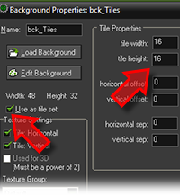
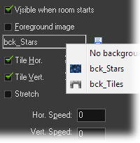
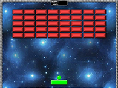
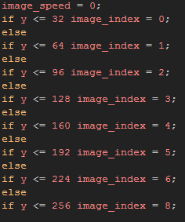

Tutorial
Page 9 of 13
Improving The Visuals
Before testing again we should make the game visually more appealling, and for that we are going to add a background and some tiles around the edges to create a nice wall. We will also make the brick objects sort by colour
rather than have them all random as they are currently.
Create a new background resource (right click the folder in the resource tree and select Create Background) and from the included assets for the game, load the "stars" background. Give the new background a
name and close the window, then create another background resource and load in the "tiles" image. You should tick the use as tileset option, which will open a new section of the window where you should also
set the tile width and tile height to 16 (as the tiles are each 16x16).

You can now open the room editor again and go to the backgrounds tab. Turn off the background colour as it is no longer necessary, and then select the stars background from the drop down menu below, making sure that
you have selected to tile it vertically and horizontally.

You should also add the tiles to the room, so click on the tiles tab and add the tiles around the edges by selecting one from the image on the left and then clicking in the room on the right to place them (you may need to set
the horizontal and vertical snap of the room editor to 16). As a final touch to the room, you must add in the control object that you made in the previous section so that the game will now show the score and lives. The room
should now look like this:

One last thing remains for us to do, and that is to change the Create Event of the brick object so that it is no longer coloured randomly, but rather have it coloured based on its y position within the room. Open the
object now and change the create event code to the following:

This code checks the y position of the instance within the room and changes the image index based on that value, checking at 32 pixel intervals as that is the height of the brick sprite.
Save your game now and give it a play. You should see a BIG difference between this version of the game and the previous one, although it still lacks a few final touches to make it a rounded and finished product...
Click on the Next button to go to the next page of the tutorial.